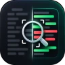

Focus Diff
A browser extension for GitHub pull requests. Filter the diff to the files you care about, see how much is left to review, and step through every conversation without hunting for it.
Install it yourself
Every release comes with ready-made builds. Download one and load it straight into your browser, no store needed.
Chrome, Edge, Brave, Arc, Opera and every other Chromium browser.
- Unzip
focus-diff-chromium.zip. -
Open
chrome://extensions(edge://extensionsin Edge) and turn on Developer mode. - Click Load unpacked and pick the unzipped folder.
Firefox, Zen, LibreWolf, Floorp and other browsers built on Firefox.
- Open
about:debugging#/runtime/this-firefox. - Click Load Temporary Add-on and pick
focus-diff-firefox.zip.
It stays until Firefox restarts. The store version stays for good.
Download for FirefoxSafari on a Mac with Xcode.
-
Unzip
focus-diff-safari.zip, run this in Terminal, then click Run in Xcode:xcrun safari-web-extension-converter focus-diff-safari --app-name "Focus Diff" --macos-only - In Safari, turn on Settings › Advanced › Show features for web developers, then Develop › Allow Unsigned Extensions.
- Turn on Focus Diff in Settings › Extensions. Safari asks again for unsigned extensions after it restarts.